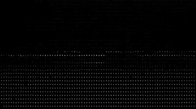

"Distropica #2" Edição 1/1
Distropica, 2022 · Arte Digital · ERC-721 Ethereum
R$ 1.300 (valor de face) + R$ 1.300 (Tablet emoldurado)
Distropica é uma exploração visual da distopia como espaço poético. A série parte de arquiteturas urbanas fragmentadas, paisagens de escombros digitais e imagens degradadas para construir um universo que oscila entre o arquivo histórico e a visão apocalíptica.
Beiguelman é uma das artistas mais importantes do Brasil na interseção entre arte, tecnologia e memória. Sua obra questiona o que permanece, o que se apaga e o que se transforma quando a memória passa a ser mediada por algoritmos e plataformas digitais.
| Artista | Giselle Beiguelman |
| Coleção | Distropica — 2022 |
| Edição | 1/1 |
| Mídia | Arte Digital |
| Token | ERC-721 (Ethereum) |
| Contrato | 0xff7d8073…13f3f613c3d |
| Procedência | Foundation App |